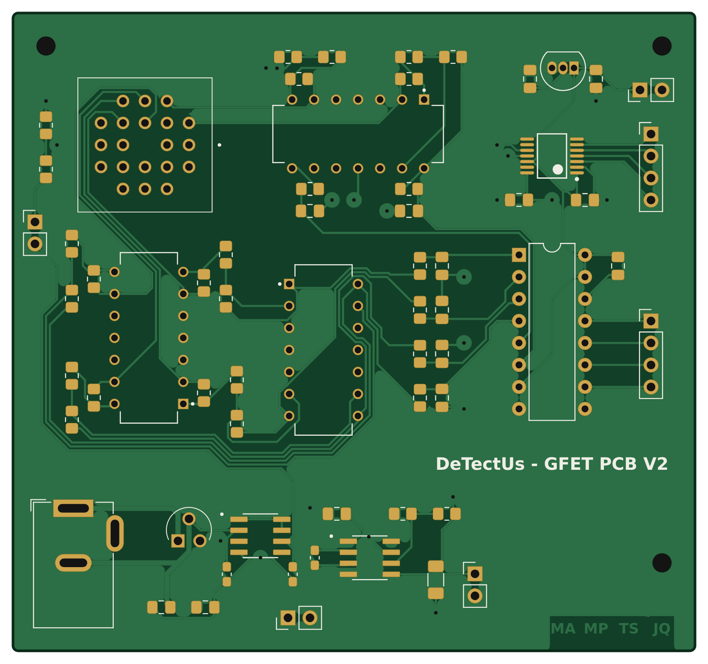
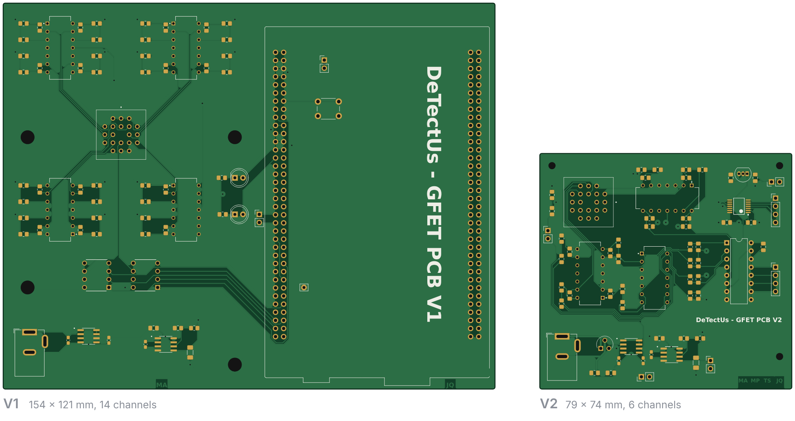
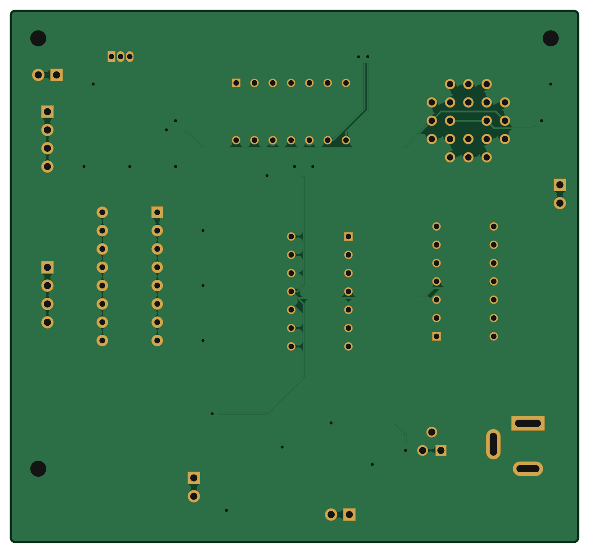
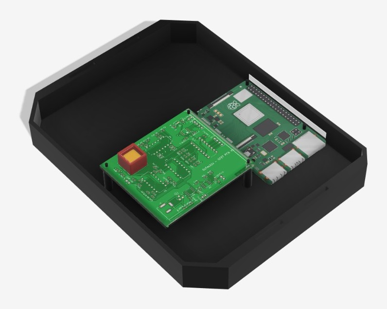
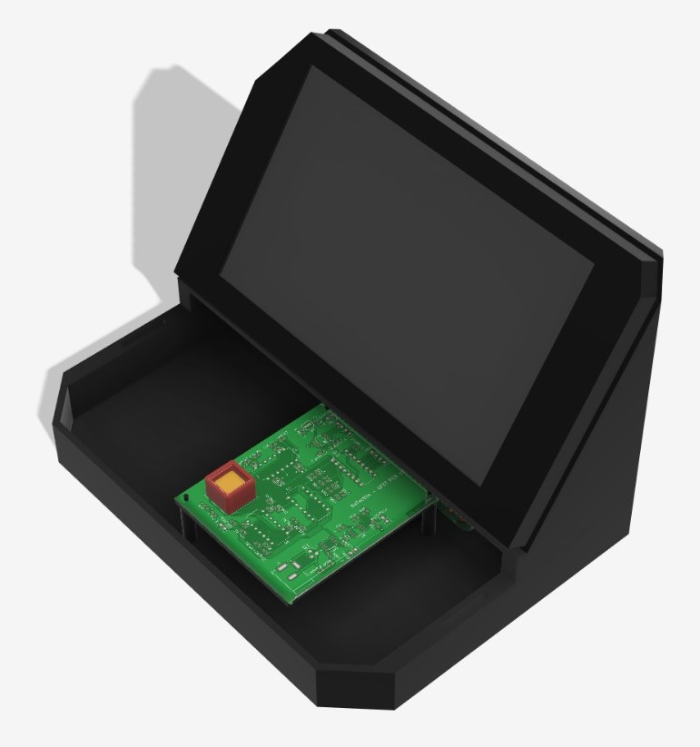
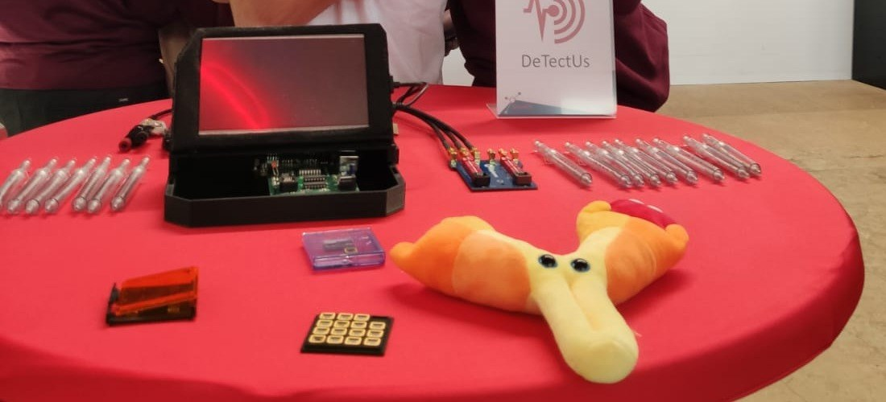

Nanoamp readout for graphene FET sensors
A low-noise data acquisition board that measures currents of a few nanoamps from a graphene field-effect transistor chip. I led the electronics and took the board through two hardware versions.

- My role
- Electronics lead, covering circuit design, layout, enclosure, bench testing and test software
- Channels
- 6 on V2, 14 on V1
- Current range
- 5 to 25 nA
- Resolution
- 0.5 nA, measured
- Inaccuracy
- 0.05 to 0.1% in initial bench tests
- Conversion
- MCP3208, 12-bit, SPI, 3.3 V reference
- Board
- Two layers, 79 × 74 mm
- Tools
- KiCad, 3D printing, Python with PyVISA, MATLAB, Keithley source-measure units and multimeter
Context
I led the electronics for DeTectUs, a multidisciplinary DTU team taking part in SensUs, an international student competition for sensor prototypes. The team built its sensor around a commercial graphene FET chip from Graphenea with 14 channels. Most of the team worked on functionalising the graphene surface, while I was responsible for the hardware that reads the chip out.
The measurement is a gate sweep. The board holds each channel at a small fixed bias, sweeps the gate voltage and records the channel current, which sits between 5 and 25 nA. The signal is a shift in the gate voltage where the current reaches its minimum, known as the Dirac point. Tracking that shift set the targets for the readout, with a resolution of 0.5 nA and at most 0.1% inaccuracy.
Signal chain
Every channel runs through the same chain (Figure 2). A transimpedance amplifier turns the channel current into a voltage. I chose the TLC2274 because its input bias current of about 1 pA is tiny next to the currents being measured. Its output is negative for a positive current, so a second stage inverts it into the range of the ADC. An RC low-pass filter at about 10 Hz removes interference and prevents aliasing before a 12-bit MCP3208 ADC, which a Raspberry Pi 4 reads over SPI.
Power comes from an external 12 V supply, which keeps mains conversion and its noise off the board. An LDO makes the 5 V rail, a charge pump inverts it to −5 V for the op-amps and a second LDO makes 3.3 V for the ADC and the digital potentiometer. The channel bias comes from a MAX6250 precision reference and a resistor divider, because any drift in the bias moves the measured current.
The gate was meant to be set by a digital potentiometer controlled from the Pi. That part was not finished in time, so a bench source-measure unit swept the gate during testing.
From V1 to V2
V1 was a 154 × 121 mm board with 14 channels. An STM32 Nucleo board did the conversion and control, and two SPI digital potentiometers set the gate and bias. Measurements on the chips then showed that channels 8 to 14 gave unstable readings.
V2 is the redesign that followed (Figure 3). It reads six channels, adds the inverting stage, moves conversion to a dedicated 12-bit ADC and hands control to a Raspberry Pi 4. The board shrank to 79 × 74 mm.

Layout
The layout is arranged to protect the low-current signals (Figure 1). The chip socket sits in the top left corner and the analog front end sits right next to it, so the input traces stay short. The power section runs along the bottom edge, away from the signal path, and the bottom layer is a ground pour (Figure 4).

Enclosure
I also designed the enclosure that turns the board into a standalone device (Figure 5). The 3D-printed base, 200 × 154 mm, holds the readout board next to a Raspberry Pi 4, and a tilted housing above them carries the display. The front stays open, so the chip socket can be reached to swap chips. Figure 6 shows the printed device at the competition.

Base with the V2 board and a Raspberry Pi 4

With the display housing in place

Testing
Alongside the boards I built an automated bench setup to characterise the graphene FET chips themselves. A Python script controls two Keithley source-measure units over GPIB with PyVISA, one holding the bias across the channel and one sweeping the gate, and logs the drain current at every step. A MATLAB script then finds the Dirac point in each sweep. Figure 7 shows one channel under a 5 µL droplet of buffer solution. After the first sweep in each direction the Dirac point repeats at the same gate voltage, within the 12.5 mV step size, and backward sweeps find it about 60 mV higher than forward ones.
I tested the boards on the bench with a Keithley source-measure unit sweeping the gate and a Keithley multimeter reading the output. The sweeps were scripted in Python with PyVISA. Both versions were built and tested.
In the first tests the readout stayed within 0.05 to 0.1% across the 5 to 25 nA range and resolved changes of 0.5 nA, which met the accuracy and resolution targets. The system was finished only a few days before the competition, so these results come from a small number of runs and the board was not used at the event itself.
Design files for both board versions, the enclosure models, the bench scripts and the measurement data are on GitHub.